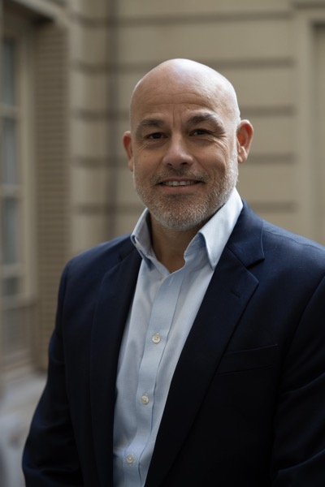
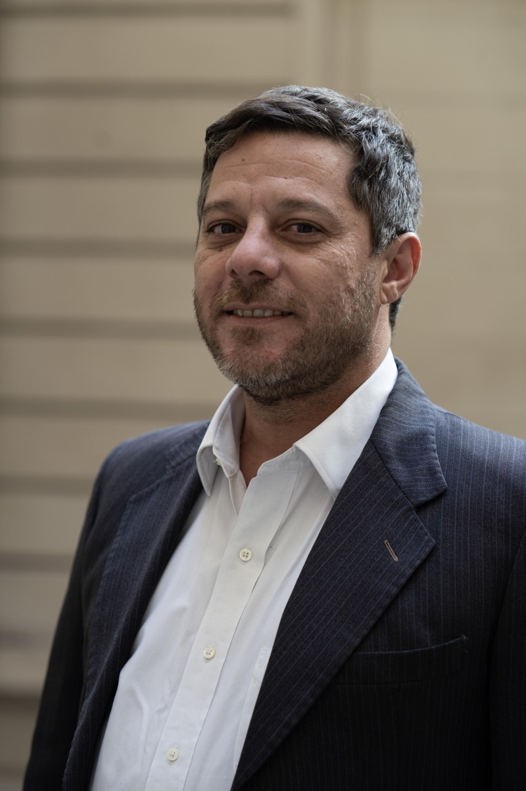
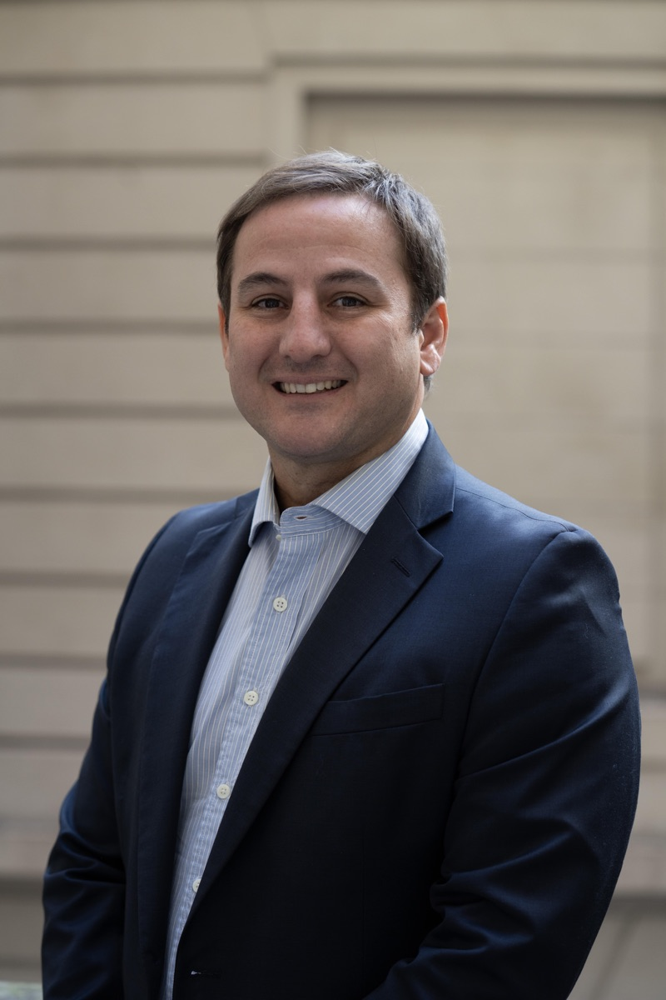
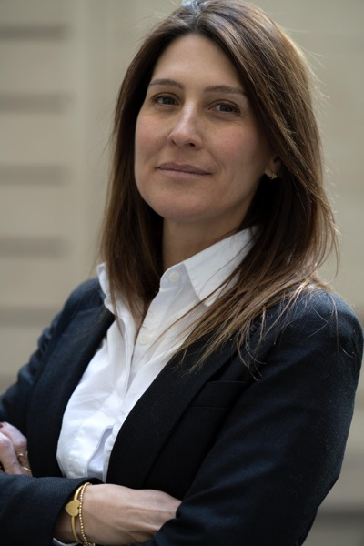
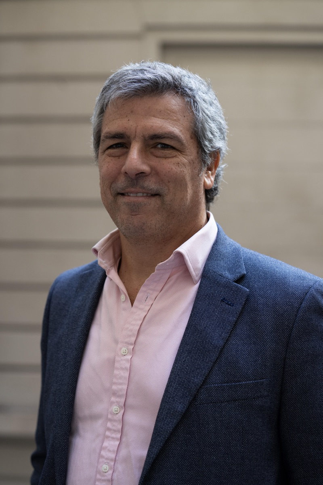
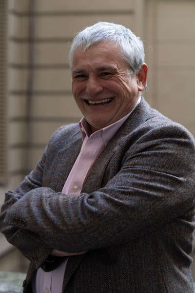
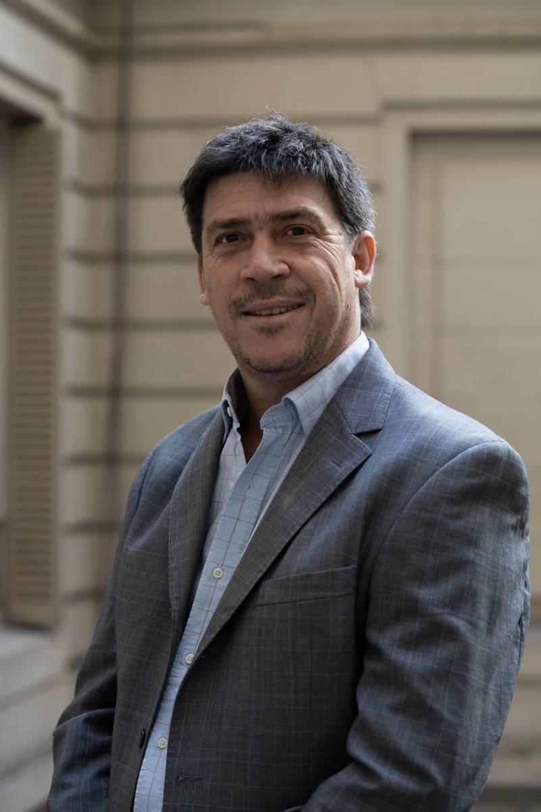
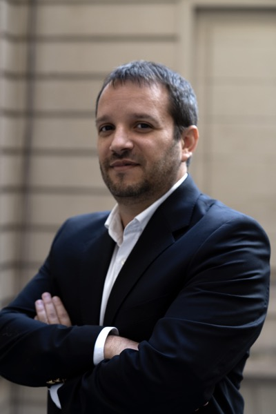
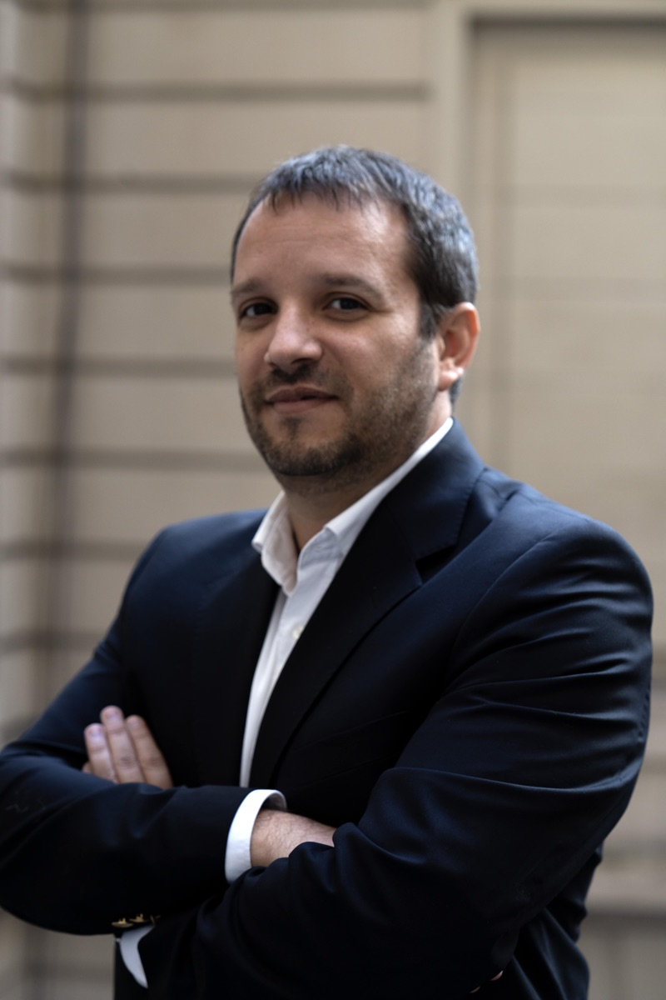
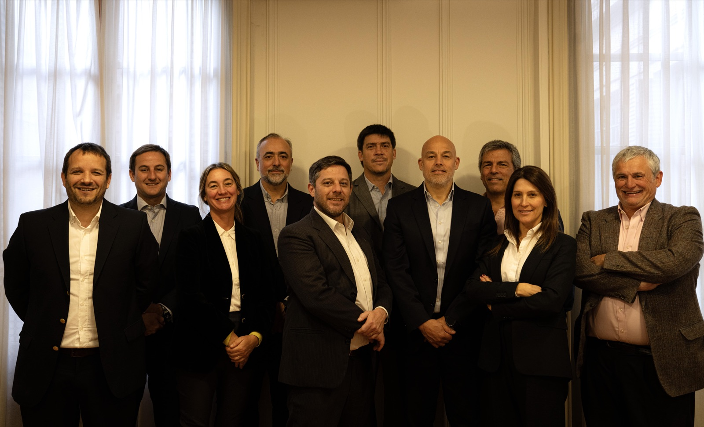

Nuestro equipo está conformado por profesionales con destacada trayectoria en las distintas ramas del derecho. Cada uno de nuestros socios aporta una sólida formación académica, experiencia en sectores clave y un enfoque estratégico para brindar soluciones jurídicas eficientes, integrales y a medida. Conocé su recorrido y áreas de especialización.

Abogado
Es abogado y escribano egresado de la Universidad Católica de Córdoba (1995 y 1996), y Magíster en Derecho Empresario por la Universidad Austral (1998).
Con más de 25 años de experiencia en derecho empresarial y comercial, se especializa en la redacción y negociación de contratos complejos, estructuración de operaciones comerciales y asesoramiento legal a empresas nacionales e internacionales.
Ha participado activamente en el lanzamiento y comercialización de DIRECTV en Argentina y Uruguay, así como en la organización y venta de derechos televisivos deportivos para TyC Sports, consolidando una destacada trayectoria en derecho del entretenimiento y audiovisual.
Su práctica incluye el asesoramiento integral en contrataciones comerciales masivas, como agencias, concesiones y distribución, además de brindar soporte jurídico a startups y proyectos digitales vinculados a negocios web y nuevas tecnologías.
También es asesor legal de CECHA (Confederación de Entidades del Comercio de Hidrocarburos y Afines de la República Argentina) y de cámaras provinciales que agrupan a estaciones de servicio de todo el país.
Miembro del Colegio Público de Abogados de la Capital Federal, combina un enfoque técnico y estratégico con una sólida comprensión del contexto empresarial argentino.
Idiomas: Español, Inglés
Email: fberdaguer@brvscu.com.ar
Abogado

Rómulo Rojo Vivot es abogado especializado en Derecho Civil, Comercial y Concursal, con más de 15 años de experiencia brindando asesoramiento jurídico integral a empresas, startups y grupos familiares.
Egresado de la Universidad Católica Argentina (UCA), donde obtuvo el título de Abogado (2004) y el Magíster en Derecho Empresario Económico (2008), complementó su formación con un Pre-Master en Derecho Empresarial en la Universidad Austral (2006).
Es autor de artículos especializados en derecho contractual y concursal, y disertante habitual en jornadas y congresos jurídicos.
Su práctica profesional abarca la redacción y negociación de contratos comerciales complejos, la reestructuración de empresas en situación de insolvencia, la transferencia de paquetes accionarios y el diseño de estructuras jurídicas eficientes para sociedades, desarrollos inmobiliarios y empresas familiares.
Representa a shoppings centers, cadenas de supermercados, empresas de emergencias médicas, constructoras, aseguradoras, bancos, textiles y gastronómicas, entre otros sectores.
Además, participa activamente en litigios civiles y comerciales, acompañando a sus clientes en instancias judiciales y extrajudiciales con un enfoque estratégico orientado a la prevención de conflictos y la sostenibilidad empresarial.
Ha trabajado en la Justicia Nacional en lo Civil, en la Agencia Gubernamental de Control y en diversos estudios jurídicos empresariales de reconocida trayectoria.
Es miembro del Instituto Argentino de Derecho Comercial (IADC), de la Asociación de Emprendedores de Argentina (ASEA), del Colegio Público de Abogados de la Ciudad de Buenos Aires y del Colegio de Abogados de San Isidro.
Idiomas: Español, Inglés
Email: rrvivot@brvscu.com.ar
Abogada
Lucía Rojo Vivot es abogada con más de 20 años de experiencia.
Su práctica profesional se centra en en derecho de familia y sucesorio, acompañando a particulares y grupos familiares en la planificación y resolución de conflictos.
Asimismo, interviene en litigios civiles, comerciales y administrativos, aportando una visión integral y estratégica. Posee amplia experiencia en la negociación, redacción y revisión de contratos comerciales, la asesoría en operaciones de compraventa de empresas y la coordinación de procesos de due diligence.
Ha formado parte de prestigiosos estudios jurídicos como Errecondo, González & Funes, Beccar Varela y Vitolo Abogados, además de haberse desempeñado en la Justicia Nacional en lo Civil.
Egresada de la Universidad de Buenos Aires (UBA) en 2002, complementó su formación académica en el exterior con estudios en Constitutional Law en The New School University (Nueva York, 1999) y en Ashwell House Study Centre (Londres, 1996).
Es miembro del Colegio Público de Abogados de la Ciudad de Buenos Aires.
Idiomas: Español, Inglés
Email: lrvivot@brvscu.com.ar
Abogado

Emilio Rojo Vivot es abogado especializado en Derecho Civil, Comercial y Laboral, con más de 15 años de experiencia en el asesoramiento jurídico integral a compañías de seguros, empresas y particulares.
Graduado en la Universidad Católica Argentina (UCA) en 2008, completó su formación con posgrados en Derecho de Daños (2016) y Derecho Laboral (2017) en la misma institución. En el 2020 completó un posgrado en Seguros (UBA).
Su práctica profesional abarca la responsabilidad civil, el derecho contractual y las obligaciones, con una destacada trayectoria en el sector asegurador.
Se especializa en las áreas del derecho contractual y de las obligaciones donde ofrece asesoramiento jurídico integral a compañías de seguros en diversas áreas, tales como responsabilidad civil, caución, transporte de carga y property, entre otros. También brinda asesoramiento jurídico en mala praxis médica, procesos colectivos (acciones de clase), y recupero de carteras de créditos.
Brinda asesoramiento a compañías de seguros en materias vinculadas a automotores, transporte de carga, caución, property y riesgos diversos, así como en casos de mala praxis médica, procesos colectivos (acciones de clase) y recupero de carteras de créditos.
Tiene amplia experiencia en la atención de juicios civiles, comerciales, laborales y administrativos relacionados con la industria del supermercadismo, retail, seguros, emergencias médicas, bancaria, construcción e inmobiliaria.
Su enfoque combina una visión estratégica y preventiva del conflicto con una sólida experiencia procesal.
Antes de incorporarse a BRVSCU, se desempeñó en Royal & Sun Alliance Compañía Argentina de Seguros S.A. y en diversos estudios jurídicos especializados en derecho empresarial.
Es miembro del Colegio Público de Abogados de la Ciudad de Buenos Aires.
Idiomas: Español, Inglés
Email: ervivot@brvscu.com.ar
Abogado
Roberto Germán Silvero es abogado especializado en Derecho Empresarial, Comercial y Laboral, con más de 25 años de trayectoria asesorando de forma integral a empresas nacionales e internacionales.
Egresado de la Universidad Nacional del Nordeste (1993) y Magíster en Derecho Empresario por la Universidad Austral (1998), combina una sólida formación académica con una amplia experiencia práctica en el ámbito corporativo y público.
Su labor profesional se centra en el asesoramiento legal en materia comercial y laboral, interviniendo en litigios complejos, negociaciones sindicales y procesos de reestructuración empresarial (M&A), especialmente en temas contractuales y de transferencia de personal.
Ha liderado procesos de licitación pública y contrataciones con el Estado, aportando una visión estratégica en la gestión legal y administrativa de proyectos públicos y privados.
Actualmente se desempeña como asesor jurídico del Grupo ERSA, y previamente fue socio del Estudio Montti, Berdaguer, Silvero & Asociados, consultor legal del Estudio Belgrano Contadores, Secretario de Extensión Universitaria en la Facultad de Derecho de la Universidad Nacional del Nordeste y asesor en el Honorable Senado de la Nación.
Es miembro del Colegio Público de Abogados de la Ciudad de Buenos Aires.
Idiomas: Español, Inglés
Email: gsilvero@brvscu.com.ar

Abogada
Carolina Canziani Aguilar es abogada especializada en Derecho Empresarial, Societario y Contratos Comerciales, con más de 20 años de experiencia en el asesoramiento jurídico integral a empresas nacionales y extranjeras.
Graduada en la Universidad Católica Argentina (UCA) en 2002 y Magíster en Derecho Empresario por la Universidad Austral (2010), ha desarrollado una destacada trayectoria en el ámbito corporativo y de negocios.
Su práctica se centra en el diseño, redacción y negociación de contratos comerciales, el derecho societario y el seguimiento legal estratégico de las operaciones empresariales de sus clientes.
Posee una amplia experiencia en el asesoramiento a empresas extranjeras durante el proceso de inicio de operaciones en Argentina (start-up), en su desarrollo posterior y en procesos de fusiones y adquisiciones (M&A).
También cuenta con una sólida trayectoria en el asesoramiento a sociedades vinculadas al sector agroindustrial y agroquímico, brindando soluciones legales adaptadas a las particularidades de cada industria.
Su enfoque combina rigor técnico, visión de negocio y un acompañamiento cercano, ofreciendo a las empresas seguridad jurídica y eficiencia en la toma de decisiones.
Ha trabajado en reconocidas firmas como Barreto & Asociados, Beccar Varela, PriceWaterhouseCoopers, DS Avocats, y en la Justicia Nacional en lo Civil.
Es miembro del Colegio Público de Abogados de la Ciudad de Buenos Aires.
Idiomas: Español, Inglés
Email: ccanziani@brvscu.com.ar
Abogado

Francisco Diego Uriburu es abogado especializado en litigios y arbitrajes comerciales y civiles, con más de 25 años de experiencia en el asesoramiento jurídico y la representación de empresas nacionales e internacionales.
Graduado en la Universidad de Buenos Aires (UBA, 1993), completó su formación en la Academy of American and International Law (Dallas, EE.UU., 1998) y cursó un Posgrado en Derecho Concursal en la Universidad Católica Argentina (UCA, 2007).
Su práctica profesional se centra en el derecho comercial, civil y bancario, con amplia experiencia en contratos de distribución, concesión, conflictos societarios y seguros, así como en procesos concursales y de reestructuración empresarial.
Ha participado en leading cases de su especialidad, interviniendo en causas de alta complejidad vinculadas a concursos, quiebras y responsabilidad civil, y asesorando tanto a empresas como a particulares en litigios laborales y corporativos.
Antes de incorporarse a BRVSCU Abogados, integró reconocidos estudios jurídicos como Marval, O’Farrell & Mairal, Moltedo, M&M Bomchil y Trevisán, desempeñándose en el área de derecho comercial y procesal.
También fue profesor ayudante en la materia Obligaciones Civiles y Comerciales en la Facultad de Derecho de la Universidad de Belgrano, lo que refleja su compromiso con la formación jurídica y la docencia.
Es miembro del Colegio Público de Abogados de la Ciudad de Buenos Aires.
Idiomas: Español, Inglés
Email: furiburu@brvscu.com.ar

Abogado
Julio Quinto Benites es abogado especializado en Derecho Empresarial, Bancario, Concursal y Societario, con más de 25 años de trayectoria en el asesoramiento jurídico a empresas nacionales, extranjeras y organismos del Estado.
Graduado en la Universidad de Buenos Aires (UBA, 1998), realizó un Posgrado en Derecho Bancario (UBA, 2003-2004) y obtuvo el título de Magíster en Derecho Empresario en la Universidad Austral (2006-2007).
Su práctica profesional abarca el derecho empresarial y de los negocios, con amplia experiencia en la confección, análisis y negociación de contratos, así como en la gestión de litigios complejos en los ámbitos concursal, societario, bancario y administrativo.
Ha asesorado a organismos gubernamentales nacionales y participado en procesos vinculados con la reestructuración de empresas y la administración de activos.
Antes de incorporarse a BRVSCU Abogados, trabajó en la Justicia Nacional en lo Comercial (1989-2000), en Carballo y Asociados Estudio Jurídico (2004-2015) y en dependencias del Ministerio de Justicia y Derechos Humanos y del Ministerio de Economía de la Nación, aportando su experiencia técnica en materia regulatoria y financiera.
En el ámbito académico, fue profesor en el Posgrado de Sindicatura Concursal en la Universidad de Concepción del Uruguay y docente en la cátedra de Concursos y Quiebras del Dr. Héctor Alegría (UBA).
Es miembro del Colegio Público de Abogados de la Ciudad de Buenos Aires.
Idiomas: Español, Inglés
Email: jqbenites@brvscu.com.ar
Abogado

Sebastián Torres es abogado especializado en Derecho Empresarial, Societario y Contractual, con amplia experiencia en el asesoramiento integral a empresas nacionales e internacionales.
Graduado en la Universidad Católica Argentina (UCA, 2003), obtuvo el Magíster en Derecho Empresario (ESEADE, 2005) y el Magíster in Comparative and International Law (University of New South Wales, Australia, 2010). Además, realizó programas de especialización en Derecho y Startups (Universidad Torcuato Di Tella, 2018) y Régimen Jurídico de los Agronegocios (Universidad Austral, 2022).
Su práctica profesional abarca el asesoramiento societario, contractual, laboral y administrativo, acompañando a empresas agropecuarias, laboratorios, aseguradoras de caución y compañías de responsabilidad civil.
Brinda asistencia en la gestión jurídica cotidiana de empresas, el diseño de nuevos negocios y la resolución de conflictos complejos, combinando un enfoque preventivo con una sólida experiencia litigiosa.
Ha intervenido en arbitrajes nacionales e internacionales ante la International Chamber of Commerce (ICC), el Tribunal Arbitral de la Bolsa de Comercio y el CEMA, y ha asesorado a clubes, deportistas y entidades del deporte profesional, participando en casos ante la Cámara de Resolución de Disputas de la FIFA.
Asimismo, cuenta con una destacada trayectoria en proyectos inmobiliarios, licitaciones públicas y contrataciones administrativas, ofreciendo soluciones jurídicas estratégicas y eficientes.
Antes de incorporarse a BRVSCU Abogados, trabajó en el Estudio Bunge, Smith y Luchía Puig (2001–2016) —afiliado a Squire Sanders & Dempsey— y en el Estudio Torres Pinto Combal.
Es miembro del Colegio Público de Abogados de la Capital Federal y de la Cámara de Comercio e Industria Argentino-Australiana (AUSCHAM).
Idiomas: Español, Inglés
Email: storres@brvscu.com.ar

Abogado

Especialista en asesoramiento de personas y empresas en materia de derecho administrativo: regulaciones nacionales y locales; contratos y licitaciones administrativas; reclamos y recursos administrativos; procedimientos sancionatorios; y procesos judiciales contenciosos administrativos, amparos y medidas cautelares con intervención en todo el país.
Experto en regulación agroalimentaria y, con amplia experiencia en asesoramiento a productores y empresas agropecuarias, semilleras, y agroindustriales.
Amplio conocimiento y experiencia en infraestructura de telecomunicaciones y licencias.
Se desempeñó en el Estudios Jurídico Juan Manuel Medrano, y Estudio Bulló.
Fue Director de Contencioso y Director General de Jurídicos de la Cancillería Argentina.
Fue Coordinador General Legal y Administrativo de la Secretaría Legal del Ministerio de Hacienda y Finanzas Públicas de la Nación, con rango de subsecretario de Estado.
Fue Director de Asuntos Jurídicos y Director de Recursos Humanos del SERVICIO NACIONAL DE SANIDAD Y CALIDAD AGROALIMENTARIA (SENASA).
Fue profesor del Instituto del Servicio Exterior de la Nación de la Cancillería Argentina.
Es profesor de Elementos de Derecho Administrativo en la Carrera de Derecho de la Universidad de Buenos Aires.
Es profesor de regulación sanitaria en el Programa “ Régimen Jurídico de los Agronegocios” en la Universidad Austral.
Miembro del Colegio Público de Abogados de la Capital Federal y del Colegio de Abogados de San Isidro, con matrícula Federal de la Cámara de Apelaciones Federal de San Martin
Es abogado por la Universidad Católica Argentina (2005) y Magíster en Derecho Administrativo por la Universidad Austral (2011). Completó diversos posgrados de especialización que consolidan su perfil técnico y multidisciplinario, entre ellos: el Régimen Jurídico de los Agronegocios (Universidad Austral, 2018), el Curso Superior en Derecho Tributario-Administrativo (Escuela del Cuerpo de Abogados del Estado, 2019) y el Posgrado en Derecho Público (Universidad de Buenos Aires, 2021).
Idiomas: Español, Inglés
Email: amedrano@brvscu.com.ar
Abogada
Abogada especializada en Derecho Societario, con experiencia en trámites ante la Inspección General de Justicia (IGJ) y en el asesoramiento jurídico integral a empresas y particulares.
Graduada en la Universidad de Buenos Aires (UBA, 2020), integra el equipo de litigios de BRVSCU Abogados, donde interviene activamente en reclamos vinculados a Defensa del Consumidor y Lealtad Comercial, así como en la gestión de conflictos comerciales y societarios.
Combina una sólida formación académica con una práctica orientada a la resolución eficiente de controversias empresariales, brindando asesoramiento preventivo y representación legal en procesos administrativos y judiciales.
Miembro del Colegio Público de Abogados de la Capital Federal (CPACF).
Idiomas: Español, Inglés
Email: ncampos@brvscu.com.ar

De izq. a der.: Agustín Medrano, Emilio Rojo Vivot, Lucía Rojo Vivot, Germán Silvero, Rómulo Rojo Vivot, Sebastián Eduardo Torres, Francisco Berdaguer, Francisco Diego Uriburu, Carolina Canziani Aguilar y Julio Quinto Benites